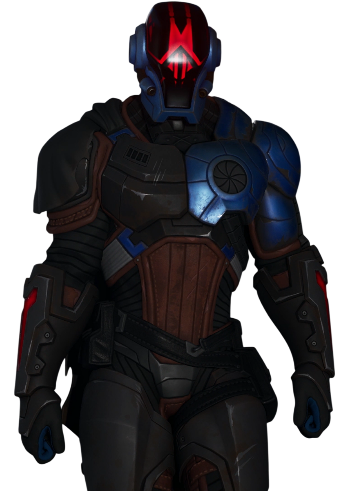
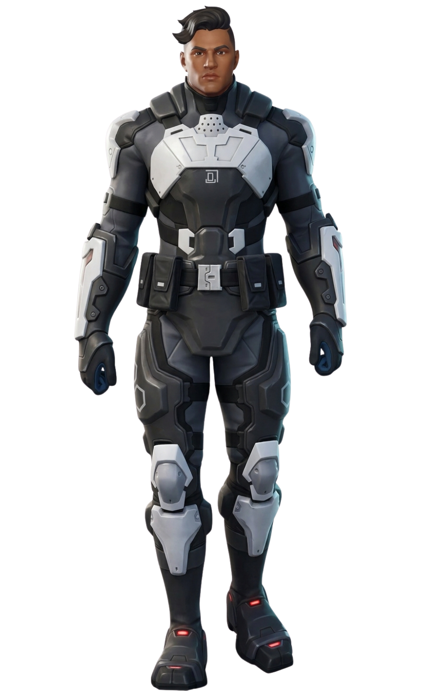
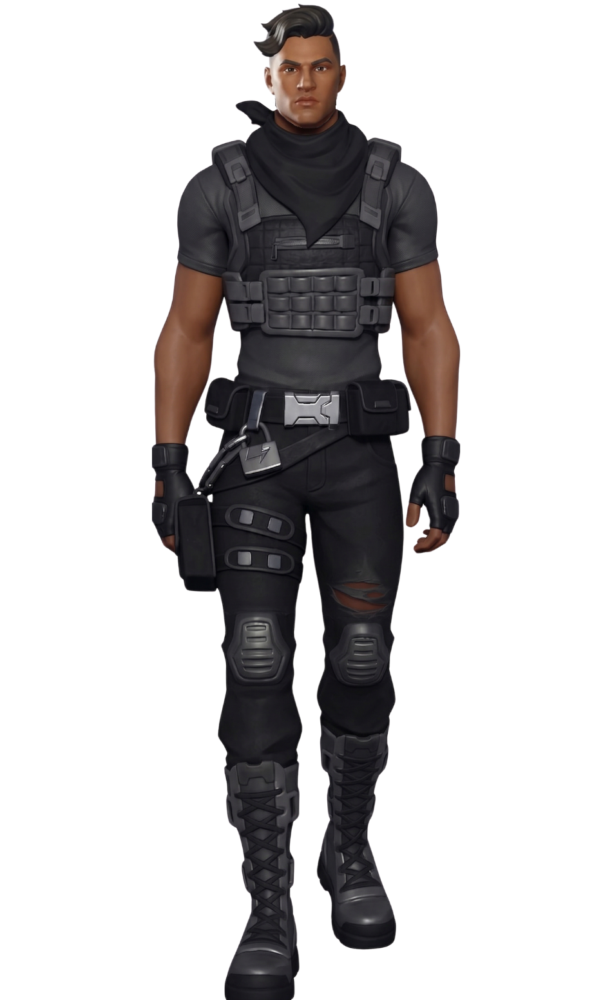
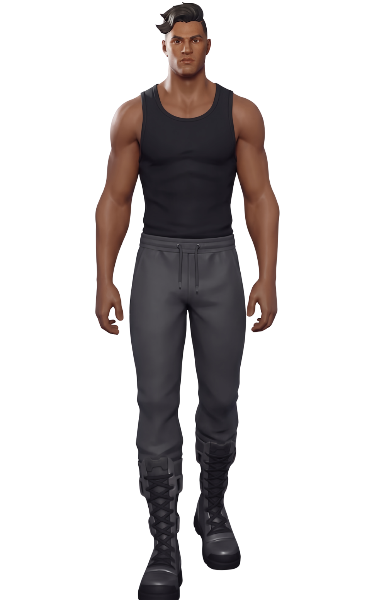
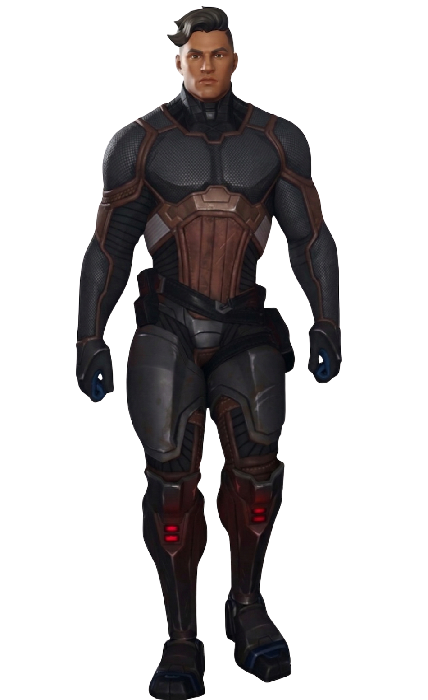
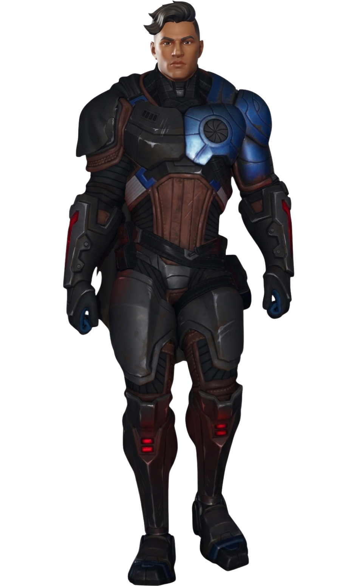
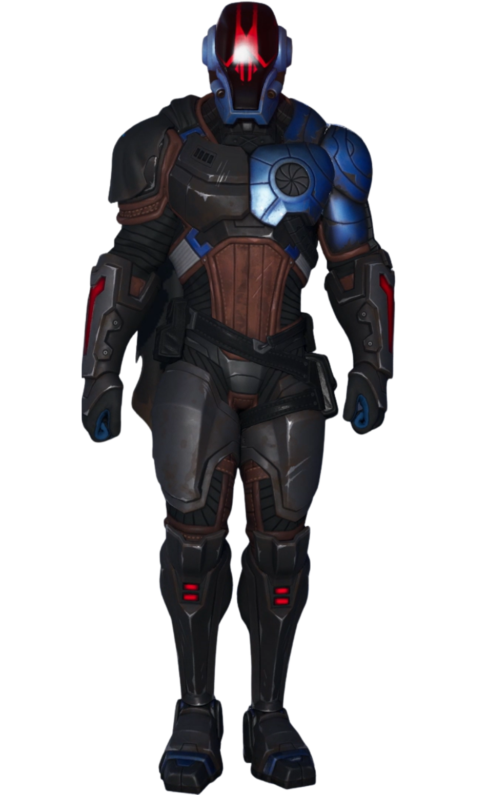
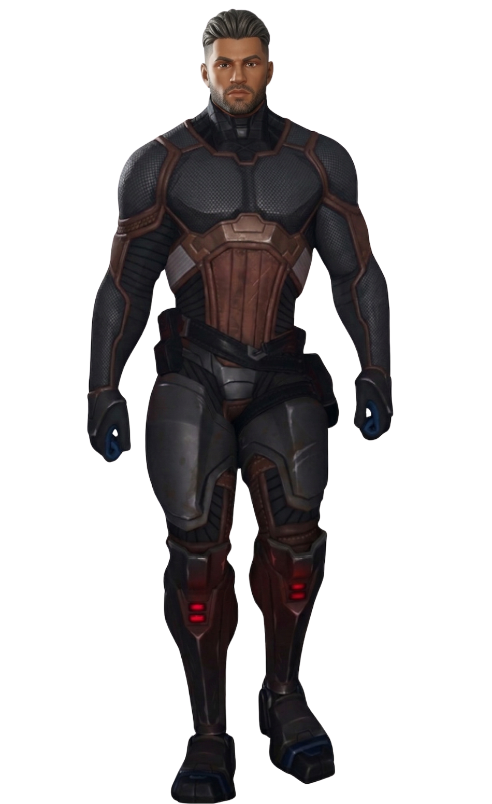
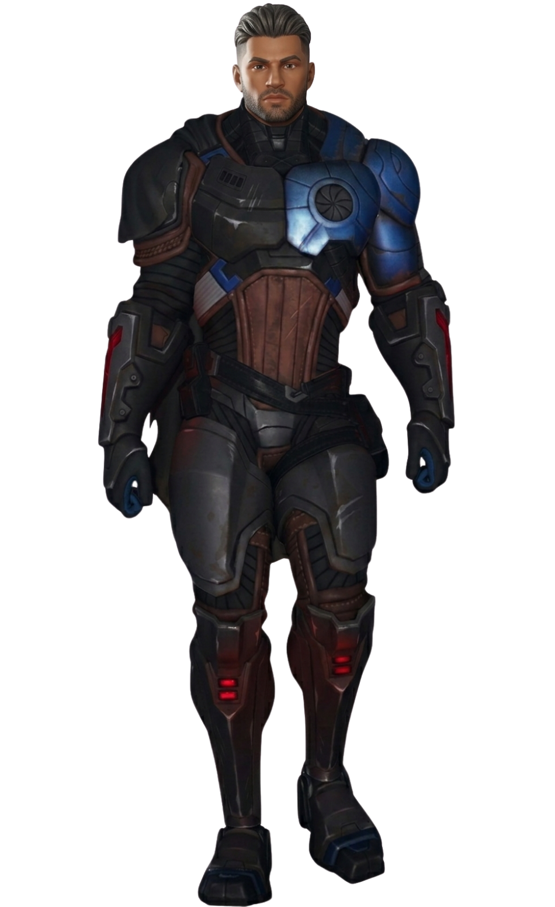

La Fondation
// Archives Biographiques
Magnus Velkor
Ancien soldat d'élite de l'Institut Onirique, Magnus s'est rebellé contre la tyrannie de Géno pour fonder la mystérieuse organisation des Sept aux côtés de sa femme, Séléna. Contraint d'abandonner son fils Raptor dans un orphelinat pour le protéger, il a passé vingt ans à lutter dans l'ombre pour libérer le Point Zéro, perdant tragiquement son épouse au combat. Après s'être héroïquement scellé dans l'orbe instable pour sauver l'Archipel, il est libéré et retrouve miraculeusement son fils. Véritable meneur, ce colosse en exo-armure unit les Sept, l'agent Jones et le Clan du Soleil pour repousser l'invasion de l'Ultime Réalité avant de guider le groupe vers le Pont.
// Variantes Visuelles







